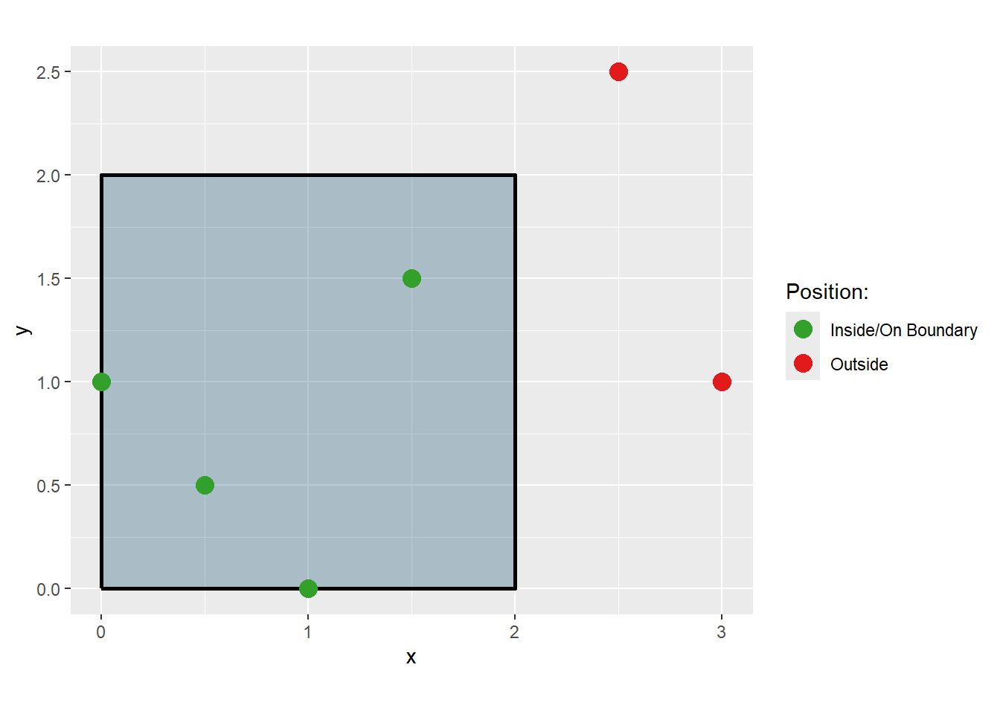
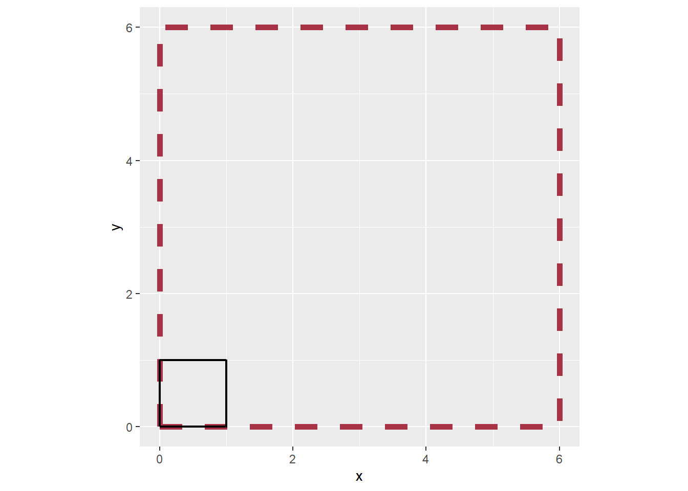

![]()
install.packages("artpack")In this post:
What is artpack?
artpack is a “new-ish” R package created to help generative artists of all levels create generative art in R. The artpack package is intended for use with the tidyverse suite, more specifically with the ggplot2 package. artpack aims to simplify the process of creating generative art while providing increased control over the actual data that’s used to create art on a ggplot. artpack does this by providing tools that create and transform data frames that can be mapped onto a ggplot to create art.
You can install artpack from CRAN with:
You can install the development version of artpack from GitHub with:
# install.packages("devtools")
devtools::install_github("Meghansaha/artpack")This post will cover the main new functions included in 0.2.0 that were not present in the original 0.1.0 CRAN release.
You can find all the changes implemented in the release notes here.
Geospatial Tools
New to artpack is a geospatial function, point_in_polygon(), which analyzes points relative to a polygon. It was created in the spirit of {sp}’s point.in.polygon() function. The sp package is currently being deprecated, so point_in_polygon() attempts to provide similar results by using the more stable {sf} package instead. point_in_polygon() is a wrapper for various sf functions and returns a numeric vector of 0’s and 1’s where a value of 0 indicates that a point is outside of the polygon being tested and a value of 1 indicates that the point is either inside or on the border of the polygon being tested.
library(dplyr)
library(ggplot2)
library(artpack)
# Create test points and polygon for visualization
df_points_prep <-
tibble(
x = c(0.5, 1.5, 2.5, 1.0, 0.0, 3.0),
y = c(0.5, 1.5, 2.5, 0.0, 1.0, 1.0)
)
df_polygon <-
tibble(
x = c(0, 2, 2, 0, 0),
y = c(0, 0, 2, 2, 0)
)
# Test the points and add labels for the plot
df_points <-
df_points_prep |>
mutate(
position = point_in_polygon(x, y, df_polygon$x, df_polygon$y),
position_string = case_match(position,
0 ~ "Outside",
1 ~ "Inside/On Boundary"
) |> factor(),
color = case_match(position,
0 ~ "#e31a1c",
1 ~ "#33a02c"
)
)
# Pull out the colors for the plot points
unique_df <- unique(df_points[c("position_string", "color")])
vec_colors <- setNames(unique_df$color, unique_df$position_string)
# Plot it
ggplot() +
geom_polygon(data = df_polygon, aes(x = x, y = y),
fill = "#104d70", alpha = 0.3, color = "black", linewidth = 1) +
geom_point(data = df_points, aes(x = x, y = y, color = position_string), size = 4) +
scale_color_manual(values = vec_colors) +
labs(color = "Position:") +
coord_equal()
Group Tools
If you’re a fan of using geom_polygon() in your generative art, chances are you know the importance of assigning grouping variables to your data where applicable. The group_sample() and group_slice() functions have been added to allow users to sample and slice their data frames by grouping variables. group_sample() and group_slice() were both created in the spirit of dplyr’s slice() function family. Just like how slice() works on single rows, group_sample() and group_slice() will always keep the rows of a group intact. So if you decide to sample 2 groups out of 5, all of the rows labeled by the two groups will be returned while the other rows will be dropped. The same is true for group_slice().
We can demonstrate group_sample() and group_slice() with a simple grid, where each square is its own group:
# Create a grid
df_grid <-
grid_maker(
xlim = c(0,10),
ylim = c(0,10),
size = 10,
fill_pal = art_pals("sunnyside", 5)
)
df_grid |>
ggplot(aes(x,y, group = group)) +
geom_polygon(
fill = df_grid$fill,
color = "#000000"
) +
theme_void() +
coord_equal()
Sampling 50% of the groups:
set.seed(09132025)
# Create a sampled df
df_grid_sampled <-
df_grid |>
group_sample(group = group, prop = .50)
df_grid_sampled |>
ggplot(aes(x,y, group = group)) +
geom_polygon(
fill = df_grid_sampled$fill,
color = "#000000"
) +
theme_void() +
coord_equal(xlim = c(0,10), ylim = c(0,10))Sampling only 10 of the groups:
set.seed(09132025)
# Create a sampled df
df_grid_sampled <-
df_grid |>
group_sample(group = group, n = 10)
df_grid_sampled |>
ggplot(aes(x,y, group = group)) +
geom_polygon(
fill = df_grid_sampled$fill,
color = "#000000"
) +
theme_void() +
coord_equal(xlim = c(0,10), ylim = c(0,10))Slicing the data so that the groups in the bottom half is removed:
# Create a sliced df
df_grid_slice <-
df_grid |>
group_slice(group = group, prop = .50, position = "tail")
df_grid_slice |>
ggplot(aes(x,y, group = group)) +
geom_polygon(
fill = df_grid_slice$fill,
color = "#000000"
) +
theme_void() +
coord_equal(xlim = c(0,10), ylim = c(0,10))Slicing the data so that 25 of the groups from the bottom remain:
# Create a sliced df
df_grid_slice <-
df_grid |>
group_slice(group = group, n = 25, position = "head")
df_grid_slice |>
ggplot(aes(x,y, group = group)) +
geom_polygon(
fill = df_grid_slice$fill,
color = "#000000"
) +
theme_void() +
coord_equal(xlim = c(0,10), ylim = c(0,10))Sequencing Tools
seq_bounce() generates a regular sequence of numeric values that “bounce” between a provided “start” and “end” number. It will always return a numeric vector of the length provided.
By default, seq_bounce() creates sequences by increments of 1:
#The length argument accepts any positive integer
seq_bounce(start_n = 1, end_n = 5, length = 15) [1] 1 2 3 4 5 4 3 2 1 2 3 4 5 4 3More precision can be obtained with the by argument:
#The by argument accepts any positive numeric
seq_bounce(start_n = 0, end_n = 10, length = 30, by = .247) [1] 0.000 0.247 0.494 0.741 0.988 1.235 1.482 1.729 1.976 2.223 2.470 2.717
[13] 2.964 3.211 3.458 3.705 3.952 4.199 4.446 4.693 4.940 5.187 5.434 5.681
[25] 5.928 6.175 6.422 6.669 6.916 7.163Transformation Tools
resizer() is artpack’s newest transformation tool. It can be used to “resize” or scale existing data points in a data frame based on either the first data point in the dataframe or a provided anchor point.
Resizing a square up by a factor of 6:
# Make a data frame
df_square <-
square_data(
x = 0,
y = 0,
size = 1
)
# Resize it
df_square_resized <-
df_square |>
resizer(x, y, factor = 6)
# Plot them
df_square |>
ggplot(aes(x,y)) +
# resized square - red dashed line
geom_path(data = df_square_resized, color = "#a83246", linewidth = 2, linetype = 2) +
# original square - black solid line
geom_path(color = "#000000", linewidth = .8) +
coord_equal()
Resizing a circle down by a factor of 3 and manually setting an anchor point:
# Make a dataframe
df_circle <-
circle_data(x = 5, y = 5, radius = 5, group_var = TRUE)
# Set the anchor point as the middle of the circle c(5,5)
# Although the point 5,5 is in the circle's bounds,
# it's not actually a row in `df_circle`
# A message will display in cases like these and is "fine" to ignore.
df_circle_resized <-
df_circle |>
resizer(x,y, x_anchor = 5, y_anchor = 5, direction = "down", factor = 3)! The anchor point you've supplied (5, 5) is not found in your data.
ℹ The data will be scaled relative to this external point# Plot it
df_circle |>
ggplot(aes(x,y)) +
# resized circle - red dashed line
geom_path(data = df_circle_resized, color = "#a83246", linewidth = 2, linetype = 2) +
# original circle - black solid line
geom_path(color = "#000000", linewidth = .8) +
coord_equal()Color Tools
Two new functions, set_brightness() and set_saturation(), have been added to artpack. Both can be used to adjust original colors by percentage of desired brightness and saturation. These functions work by transforming hexadecimal webcolor values or any value from colors() into an RGB value, and then an HSL value to adjust the brightness or saturation. After the adjustment, the values are converted into a hexadecimal webcolor that is then returned to the environment for use.
These functions use a normalized scale of 0 to 1, meaning that 0% is the darkest/least saturated value in relation to the original color provided and 100% is the brightest/most saturated value in relation to the original color provided.
An example of adjusting the brightness of a color. Note how the “darker” color shown is not much darker than the original, because the original color already had a brightness of 35%:
# Create color values
original_color <- "#94321c" #(original brightness == %35)
darker_color <- set_brightness(original_color, .30) #(brightness == %30)
lighter_color <- set_brightness(original_color, .7) #(brightness == %70)
# Make a data frame with the color values
df_colors <-
data.frame(
x = 0:2,
y = 1,
color = c(darker_color, original_color, lighter_color)
)
# Add a label for clarity
df_colors$label <- paste(c("Darker", "Original", "Lighter"), ":", df_colors$color)
# Plot to see the brightness changes
df_colors |>
ggplot(aes(x,y)) +
geom_label(aes(x = 0:2), y = 2, label = df_colors$label) +
geom_point(color = df_colors$color, shape = 15, size = 50) +
coord_cartesian(xlim = c(-1,3), ylim = c(0,3)) +
theme_void()Saturation is adjusted similarly:
# Create color values
original_color <- "#748c3f" #(original saturation == %38)
desaturated_color <- set_saturation(original_color, .2) #(saturation == %20)
saturated_color <- set_saturation(original_color, .9) #(saturation == %90)
# Make a data frame with the color values
df_colors <-
data.frame(
x = 0:2,
y = 1,
color = c(desaturated_color, original_color, saturated_color)
)
# Add a label for clarity
df_colors$label <- paste(c("Desaturated", "Original", "Saturated"), ":", df_colors$color)
# Plot to see the saturation changes
df_colors |>
ggplot(aes(x,y)) +
geom_label(aes(x = 0:2), y = 2, label = df_colors$label) +
geom_point(color = df_colors$color, shape = 15, size = 50) +
coord_cartesian(xlim = c(-1,3), ylim = c(0,3)) +
theme_void()You might be asking how you could determine the original brightness or saturation of a color you provide. Currently, there is no function in artpack that does this, but it is planned for a future release.
In the meantime, if needed, you can absolutely use other methods to determine this. Take the color “#748c3f” for example. Going to Google.com and using their “Color picker” tool can let you easily see these values:
An “HSL” value is provided in the bottom right of the picker tool. The second value, “S”, is the saturation percentage of the color (38%), and the third value, “L”, is the “lightness” which is essentially the brightness (40%).
More Vignettes
The last update you might want to check out are the new and improved vignettes:
Brief Examples has an updated example of some art that can be made with artpack.
Connecting artpack Assets to ggplot2 Geoms is a new vignette that goes over the various artpack asset creations and their recommended ggplot2 geoms that can be used when creating art in R with artpack and ggplot2. It also gives a quick example of how to bring your newly created art data into a ggplot if you need that information.
See aRtpack in Action is a new vignette that shows you how to make an art piece from start to finish, which may be helpful for anyone just starting or those who just need an example of an entire workflow that’s possible with artpack.
Reminder
artpack is still in its infancy and is currently developed and maintained by one person. Some weird stuff may happen when using artpack. If you come across any bugs or have any ideas about new features you’d want to see implemented, or recommend improvements, please do so on artpack’s github repository by opening a new issue here.